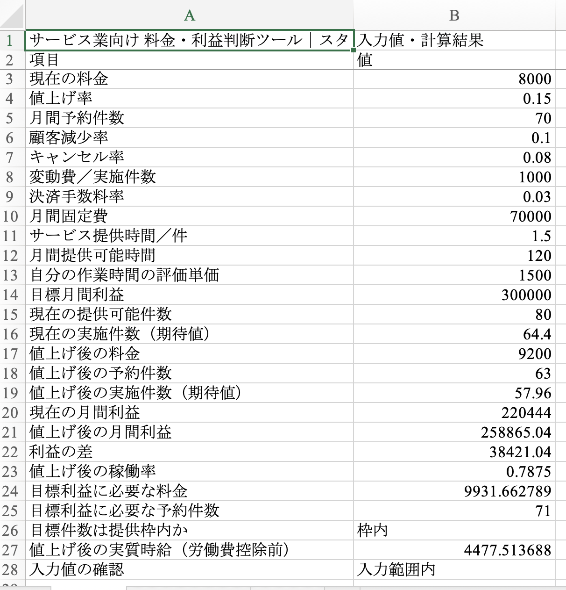
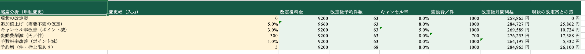

計算の前提から知りたい方へ：提供時間・キャンセルを含むサービス料金の決め方
目標利益に必要な予約数は、
提供できる枠に収まる？
サロン・個人レッスン・相談サービスの料金改定を、予約減少・キャンセル・費用・提供時間から試算するExcelです。値上げ後の参考利益と、目標に必要な予約数・提供枠を照らし合わせて確認できます。
予約件数の予測や日別の予定表管理は行いません。入力した仮定に基づく試算です。提供枠は月間提供可能時間からの概算で、日ごとの予約の入り方は別に確認します。
キャンセルの影響だけを先に確かめるなら、無料のキャンセル利益計算ツールを利用できます。無料ツールでは、料金改定・提供枠・複数サービスの比較は行いません。
サービスの数と、比較したい内容で選ぶ
1種類のサービスで、料金改定を試したい → Standard
現在の料金、予約件数、キャンセル率、費用と提供時間を入力して、料金改定前後の参考利益を比較したい方に向いています。目標利益に必要な料金・予約件数、提供枠との照合も、Standardで確認できます。
サービスを並べたい、改善条件も比較したい → Pro
最大6サービスの採算・時間配分を並べたい方や、料金・キャンセル率・費用などをそれぞれ単独で変更した場合の参考利益を比較したい方に向いています。1種類のサービスでも、改善施策比較を使いたい場合はProが選択肢になります。
ProはStandardの基本機能を含みます。両方を購入する必要はありません。どちらもMicrosoft Excelが別途必要です。購入前に、下の動作確認環境と、できないことをご確認ください。
| 比較項目 | Standard | Pro |
|---|---|---|
| 価格 | 1,480円 | 2,980円 |
| 料金改定前後の利益比較 | 対応 | 対応 |
| 顧客減少シナリオ | 対応 | 対応 |
| 目標利益から料金・予約件数を逆算 | 対応 | 対応 |
| 提供枠上限・稼働率の確認 | 対応 | 対応 |
| サービス別の採算・割当時間比較 | なし | 最大6サービス |
| 改善施策比較・改善レポート | なし | 対応 |
| 収録内容 | Excel 3シート＋HTMLガイド | Excel 7シート＋HTMLガイド |
どちらも買い切りです。Microsoft Excelは別途必要です。ProはStandardの基本機能を含むため、両方を購入する必要はありません。
Standard：1種類のサービスから料金を見直す
現在の料金、値上げ率、予約減少、キャンセル率、費用、提供時間を入力。値上げ後の利益と、目標利益に必要な料金・予約件数を確認したい方に向いています。
1,480円・買い切り
Pro：複数サービスと改善施策を比較する
最大6サービスの採算と時間配分を比較できます。追加値上げ、キャンセル率、変動費、手数料率、予約増をそれぞれ単独で変更した場合の利益も比較できます。
料金・提供時間・共通固定費をそろえる考え方は、サービス別の利益を比較する計算例で確認できます。
「料金設定」と「サービス別比較」は独立した試算です。固定費は利用者が各サービスへ振り分けます。施策の実施費用や、追加値上げによる需要減少は自動推計しません。
2,980円・買い切り
Excelの実画面を確認する
Standardの料金設定シートと、Proの改善施策比較シートです。表示例には架空の初期サンプルを使用しています。文字が小さい場合は、画像の枠内を横にスクロールするか、各画像の下にあるリンクから別タブで開いてご覧ください。キーボードでは画像の枠にTabキーで移動し、左右の矢印キーでスクロールできます。
Standard版：料金設定シート

Standard版の料金設定シートの画像を別タブで開く
Pro版：改善施策比較シート

Pro版の改善施策比較シートの画像を別タブで開く
利益は自分の時間の評価額を費用として差し引いた参考値です。現金収支や税引後所得とは異なり、実際の予約数・売上・利益の予測や保証を行うものではありません。Proの改善施策比較は、追加値上げによる需要減少や施策の実施費用を自動推計しません。Excelの表示はご利用環境や倍率により異なります。
以下は、製品ファイルの初期値と数式に基づき、入力と結果を読みやすい表に再構成したサンプルです。Excelの画面そのものではありません。
Standard／Pro 共通
1．料金を変えた場合の利益を比較
料金、予約件数、キャンセル率、費用と提供時間を入力すると、現在と料金改定後の参考利益を比較できます。
入力する条件の例
| 現在の料金 | 8,000円 |
|---|---|
| 値上げ率 | 15％ |
| 月間予約件数 | 70件 |
| 想定する顧客減少率 | 10％ |
| キャンセル率 | 8％ |
| 変動費／実施1件 | 1,000円 |
| 決済手数料率 | 3％ |
| 月間固定費 | 70,000円 |
| 提供時間／件 | 1.5時間 |
| 月間提供可能時間 | 120時間 |
| 自分の時間の評価単価 | 1,500円／時間 |
| 目標月間利益 | 300,000円 |
計算結果の例
| 値上げ後の料金 | 9,200円 |
|---|---|
| 値上げ後の予約件数 | 63件 |
| 現在の実施件数（期待値） | 64.4件 |
| 値上げ後の実施件数（期待値） | 57.96件 |
| 現在の月間参考利益 | 220,444円 |
| 値上げ後の月間参考利益 | 258,865.04円 |
| 参考利益の差 | ＋38,421.04円 |
| 値上げ後の稼働率 | 78.75％ |
| 目標利益に必要な予約件数 | 71件 |
| 提供枠との照合 | 80枠の範囲内 |
予約が10％減ると仮定した案でも、入力条件によっては参考利益が増えることがあります。この例は、実際の予約減少率や利益を予測したものではありません。
利益は、実施件数に対応する自分の時間の評価額も差し引いた参考値です。現金収支・税引後所得とは異なります。予約件数と実施件数を区別し、キャンセル後の期待値を二重に減らさないようにしてください。
Pro の追加機能
2．サービス別の採算を並べる
最大6サービスを比較できます。次の3件は、ファイルに入っている架空の初期サンプルです。
| 初期サンプルの名称 | 現行利益 | 改定後利益 | 利益差 | 月間割当時間 |
|---|---|---|---|---|
| 個人レッスン | 110,222円 | 126,822円 | ＋16,600円 | 55時間 |
| グループ講座 | 32,700円 | 38,609円 | ＋5,909円 | 25時間 |
| オンライン相談 | 52,909円 | 53,598円 | ＋690円 | 20時間 |
金額は元の数値から各項目を1円単位に四捨五入して表示しており、表示額同士の差と利益差が1円ずれる場合があります。「料金設定」と「サービス別比較」は独立した試算です。各サービスの固定費と時間配分は利用者が入力します。
名称にかかわらず1予約が1枠を使うモデルです。グループ講座の同時受講者数や定員別の売上を自動管理する機能ではありません。
Pro の追加機能
3．条件を1つずつ変えて比較
料金設定の同じ改定案を基準に、各条件だけを変更した場合を並べます。複数の施策を組み合わせた効果を示す表ではありません。
| 仮の変更 | 変更幅 | 改定後月間参考利益 | 基準案との差 |
|---|---|---|---|
| 基準の改定案 | 追加変更なし | 258,865円 | 0円 |
| 追加の値上げ | さらに5％・需要不変の仮定 | 284,727円 | ＋25,862円 |
| キャンセル率の変更 | 8％から5％へ（3ポイント減） | 269,589円 | ＋10,724円 |
| 変動費の変更 | 実施1件あたり300円削減 | 276,253円 | ＋17,388円 |
| 手数料率の変更 | 3％から2％へ（1ポイント減） | 264,197円 | ＋5,332円 |
| 予約件数の変更 | 5件追加・提供枠上限あり | 284,965円 | ＋26,100円 |
金額は各項目を1円単位で四捨五入。変更の実施費用、追加値上げによる顧客減少、集客費用などは自動推計しません。増益額の順位は実施の優先順位を決めるものではありません。
購入前に確認したいこと
- 利益は作業時間×評価単価を費用として差し引いた参考値で、現金収支や税引後所得とは異なります。
- 1予約が1提供枠を使うモデルです。グループの定員管理、同時受講者数別の売上、再予約、キャンセル料、税金等は自動計算しません。
- キャンセル後の実施件数は期待値で、小数になる場合があります。
- 施策の増益額の順位は、そのまま実施の優先順位を示しません。
- 売上・利益の向上や集客を保証する商品ではありません。
動作確認環境
Microsoft Excel 2024 for Mac、バージョン16.114（26101123）。再計算、入力制限の一部、印刷プレビューを確認しています。
Windows版Excel、ブラウザー版Excel、Googleスプレッドシート、Numbersは動作未確認です。
購入前によく確認したいこと
スマートフォンだけでも使えますか？
スマートフォンだけでのExcelファイル利用は、動作確認済みの対象に含めていません。このWebサイトや実画面画像をスマートフォンで閲覧できることと、商品のExcelファイルを編集・再計算できることは別です。スマートフォンのみで利用する予定の方は、動作確認済みとして購入しないようご注意ください。
WindowsやGoogleスプレッドシートで使えますか？
確認済みの環境はMicrosoft Excel 2024 for Mac、バージョン16.114（26101123）です。再計算、入力制限の一部、印刷プレビューを確認しています。Windows版Excel、ブラウザー版Excel、Googleスプレッドシート、Numbersは動作未確認で、同じように動くとは保証していません。
購入価格にMicrosoft Excelも含まれますか？
含まれません。商品はExcelファイルとHTMLガイドです。Microsoft Excelは別途必要です。HTMLガイドは説明書であり、ガイド上で数値を入力して計算する商品ではありません。
1種類のサービスならProは必要ありませんか？
料金改定前後の利益比較、顧客減少シナリオ、目標利益からの逆算、提供枠・稼働率の確認が目的なら、Standardで対応します。1種類でも、各条件を単独で変更した改善施策の比較と改善レポートを使いたい場合はProを選べます。
予約受付や、毎月の売上記録にも使えますか？
この商品は、入力した条件に基づいて料金・利益を試算するものです。予約受付、日別カレンダー管理、将来の予約件数の予測は行いません。12か月の実績管理も、サービス業向けStandard／Proには含まれません。
Proの試算結果は、すべて自動で連動しますか？
「料金設定」と「サービス別比較」は独立した試算です。サービス別の条件や固定費の振り分けは、ご自身で入力します。「改善施策比較」は各条件を単独で変えた場合の比較で、複数施策の組み合わせ効果、施策の実施費用、追加値上げによる需要減少を自動推計するものではありません。
購入前に、入力例や操作手順を見られますか？
Excelの実画面と入力・結果のサンプルを掲載しています。ファイルの開き方、入力セル、結果の読み方、困ったときの確認は、Standard／Proの使い方ガイドで確認できます。
購入後の使い方
入力セル・結果の見方や、計算が更新されないときの確認手順は、Standard／Proの使い方ガイドをご覧ください。
- BOOTHで購入後、ZIPをダウンロードして展開します。
- guide.htmlをブラウザーで開き、操作方法と注意事項を確認します。
- simulator.xlsxをMicrosoft Excelで開き、自分の条件を入力します。
購入者本人または購入した1事業者の内部業務で利用できます。再配布・転売・第三者への共有は禁止です。お問い合わせや返品・不具合対応の条件は、各BOOTH商品ページでご確認ください。
物販や月次実績管理が目的なら
最大20商品の比較と12か月の実績管理を行う物販向けExcel（2,980円）は別商品です。今回のサービス業向けStandard／Proに、12か月の実績管理機能は含まれません。
1商品の価格変更をその場で試算するなら、トップページの利益シミュレーターも利用できます。このツールは、予約枠やキャンセルを考慮するサービス業向けExcelとは計算モデルが異なります。